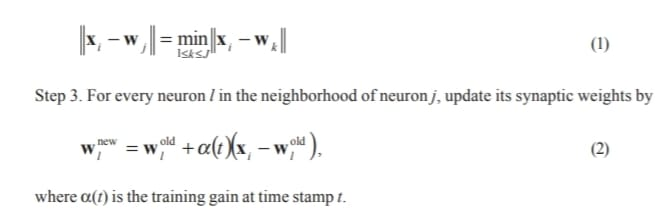

Recently, many approaches have been devised for mining various kinds of knowledge from texts. One important application of text mining is to identify themes and the semantic relations among these themes for text categorization. Traditionally, these themes were arranged in a hierarchical manner to achieve effective searching and indexing as well as easy comprehension for human beings. The determination of category themes and their hierarchical structures was mostly done by human experts. In this work, we developed an approach to automatically generate category themes and reveal the hierarchical structure among them. We also used the generated structure to categorize text documents. The document collection was trained by a self-organizing map to form two feature maps. We then analyzed these maps and obtained the category themes and their structure. Although the test corpus contains documents written in Chinese, the proposed approach can be applied to documents written in any language, and such documents can be transformed into a list of separated terms.
In text categorization, we try to assign a text document to some predefined category. When a set of documents is well categorized, both storage and retrieval of these documents can be effectively achieved. A primary characteristic of text categorization is that a category reveals the common theme of those documents under this category; that is, these documents form a natural cluster of similar context. Thus, text categorization provides some knowledge about the document collection. An interesting argument about text categorization is that before we can acquire knowledge through text categorization, we need some kinds of knowledge to correctly categorize documents. For example, two kinds of key knowledge we need to perform text categorization are 1) the categories that we can use, and 2) the relationships among the categories. The first kind of knowledge provides a set of themes that we can use to categorize documents. Similar documents will be categorized under the same category if they have the same theme. These categories form the basis of text categorization. The second kind of knowledge reveals the structure among categories according to their semantic similarities. Ideally, similar categories, i.e., categories with similar themes, will be arranged “closely” within the structure in some manner. Such arrangement provides us with an effective way to store and retrieve documents. Moreover, such structure may make the categorization result more comprehensible by humans.
Traditionally, human experts or some semi-automatic mechanisms that incorporate human knowledge and computing techniques such as natural language processing provided these kinds of knowledge. For example, the MEDLINE corpus required considerable human effort to carry out categorization using a set of Medical Subject Headings (MeSH) categories (Mehnert, 1997). However, fully automatic generation of categories and their structure are difficult for two reasons. First, we need to select some important words as category terms (or category themes). We use these words to represent the themes of categories and to provide indexing information for the categorized documents. Generally, a category term contains only a single word or a phrase. The selection of the terms will affect the categorization result as well as the effectiveness of the categorization. A proper selection of a category term should be able to represent the general idea of the documents under the corresponding category. Such selections were always done by human linguistic experts because we need an insight of the underlying semantic structure of a language to make the selections. Unfortunately, such insight is hard to automate. Certain techniques such as word frequency counts may help, but it is the human experts who finally decide what terms are most discriminative and representative. Second, for the ease of human comprehension, the categories were always arranged in a tree-like hierarchical structure. This hierarchy reveals the relationships among categories. A category associated with higher-level nodes of the hierarchy represents a more general theme than those associated with lower level nodes. Also, a parent category in the hierarchy should represent the common theme of its child categories. The retrieval of documents of a particular interest can be effectively achieved through such hierarchy. Although the hierarchical structure is ideal for revealing the similarities among categories, the hierarchy must be constructed carefully such that irrelevant categories may not be the children of the same parent category. A thorough investigation of the semantic relations among category terms must be conducted to establish a well-organized hierarchy. This process is also hard to automate. Therefore, most of text categorization
systems focus on developing methodologies to categorize documents according to some human-specified category terms and hierarchy, rather than on generating category terms and hierarchy automatically.
In this work, we provide a method that can automatically generate category themes and establish the hierarchical structure among categories. Traditionally, category themes were selected according to the popularity of words in the majority of documents, which can be done by human engineering, statistical training, or a combination of the two. In this work, we reversed the text categorization process to obtain the category themes. First, we should cluster the documents. The document collection was trained by the selforganizing maps (SOM) (Kohonen, 1997) algorithm to generate two feature maps, namely the document cluster map (DCM) and the word cluster map (WCM). A neuron in these two maps represents a document cluster and a word cluster, respectively. Through the self-organizing process, the distribution of neurons in the maps reveals the similarities among clusters. We selected category themes according to such similarities. To generate the category themes, dominating neurons in the DCM were first found as centroids of some super-clusters that each represent a general category. The words associated with the corresponding neurons in WCM were then used to select category themes. Examining the correlations among neurons in the two maps may also reveal the structure of categories.
The corpus that was used to train the maps consists of documents that are written in Chinese. We decided to use a Chinese corpus for two reasons. First, over a quarter of the earth’s population use Chinese as their native language. However, experiments on techniques for mining Chinese documents were relatively less than those for documents written in other languages. Second, demands for Chinese-based, bilingual, or multilingual text-mining techniques arise rapidly nowadays. We feel that such demands could not be easily met if experiments were only conducted in English corpora. On the other hand, a difficult problem in developing Chinese-based text-mining techniques is that research on the lexical analysis of Chinese documents is still in its infancy. Therefore, methodologies developed for English documents play an inevitable role in developing a model for knowledge discovery in Chinese documents. In spite of the differences in grammar and syntax between Chinese and English, we can always separate the documents, whether written in English or Chinese, into a list of terms that may be words or phrases. Thus, methodologies developed based on word frequency count may provide an unified way in processing documents written in any language that can be separated into a list of terms. In this work, a traditional term-based representation scheme in information retrieval field is adopted for document encoding. The same method developed in our work can naturally extend to English or multi-lingual documents because these documents can always be represented by a list of terms.
Text categorization or classification systems usually categorized documents according to some predefined category hierarchy. An example is the work by the CMU textlearning group (Grobelnik & Mladenic, 1998) that used the Yahoo! hierarchy to categorize documents. Most text categorization research focused on developing methods for
categorization. Examples are Bayesian independent classifier (Lewis, 1992), decision trees (Apte, Damerau, & Weiss, 1994), linear classifiers (Lewis,, Schapire, Callan, & Papka, 1996), context-sensitive learning (Cohen & Singer, 1996), learning by combining classifier (Larkey & Croft, 1996), and instance-based learning (Lam, Ruiz, & Srinivasan, 1999). Another usage of category hierarchy is browsing and searching the retrieval results. An example is the Cat-a-Cone system developed by Hearst and Karadi (1997). Feldman, Dargan, and Hirsh (1998) combined keyword distribution and keyword hierarchy to perform a range of data-mining operations in documents. Approaches on automatically generating the category themes are similar in context with research on topic identification or theme generation of text documents. Salton and Singhal (1994) generated a text relationship map among text excerpts and recognized all groups of three mutually related text excerpts. A merging process is applied iteratively to these groups to finally obtain the theme (or a set of themes) of all text excerpts. Another approach by Salton (1971) and Salton and Lesk (1971) clusters the document set and constructs a thesaurus-like structure. For example, Salton and Lesk divide the whole dataset into clusters where no overlap is allowed and construct a dictionary. The approach is nonhierarchy in this sense. Clifton and Cooley (1999) used traditional data-mining techniques to identify topics in a text corpus. They used a hypergraph partitioning scheme to cluster frequent item sets. The topic is represented as a set of named entities of the corresponding cluster. Ponte and Croft (1997) applied dynamic programming techniques to segment text into relatively small segments. These segments can then be used for topic identification. Lin (1995) used a knowledge-based concept counting paradigm to identify topics through the WordNet hierarchy. Hearst and Plaunt (1993) argued that the advent of full-length documents should be accompanied by the need for subtopic identification. They developed techniques for detecting subtopics and performed experiments using sequences of locally concentrated discussions rather than full-length documents. All these works, to some extent, may identify topics of documents that can be used as category themes for text categorization. However, they either rely on predefined category hierarchy (e.g., Lin, 1995) or do not reveal the hierarchy at all.
Recently, researchers have proposed methods for automatically developing category hierarchy. McCallum and Nigam (1999) used a bootstrapping process to generate new terms from a set of human-provided keywords. Human intervention is still required in their work. Probabilistic methods were widely used in exploiting hierarchy. Weigend, Wiener, and Pedersen (1999) proposed a two-level architecture for text categorization. The first level of the architecture predicts the probabilities of the meta-topic groups, which are groups of topics. This allows the individual models for each topic on the second level to focus on finer discrimination within the group. They used a supervised neural network to learn the hierarchy where topic classes were provided and already assigned. A different probabilistic approach by Hofmann (1999) used an unsupervised learning architecture called Cluster-Abstraction Model to organize groups of documents in a hierarchy.
Research on Chinese text processing focused on the tasks of retrieval and segmentation. Some work can be found in Chen, He, Xu, Gey, and Meggs (1997); Dai, Loh, and Khoo (1999); Huang & Robertson (1997a); Nie, Brisebois, and Ren (1996); Rajaraman, Lai, and Changwen (1997); and Wu and Tseng (1993, 1995). To our knowledge, there is still no work on knowledge discovery in Chinese text documents. The self-organizing maps model used in this work has been adopted by several other researchers for document
clustering (for example, Kaski, Honkela, Lagus & Kohonen, 1998; Rauber & Merkl, 1999; and Rizzo, Allegra, & Fulantelli, 1999). However, we found no work similar to our research.
To obtain the category hierarchy, we first perform a clustering process on the corpus. We then apply a category hierarchy generation process to the clustering result and obtain the category hierarchy. This section describes the clustering process. We will start with the preprocessing steps, follow by the clustering process by the SOM learning algorithm. Two labeling processes are then applied to the trained result. After the labeling processes, we obtain two feature maps that characterize the relationship between documents and words, respectively. Two maps are obtained after the labeling processes. The category hierarchy generation process, which will be described in the next section, is then applied to these two maps to develop the category hierarchy.
Our approach begins with a standard practice in information retrieval (Salton & McGill, 1983), i.e., the vector space model, to encode documents with vectors, in which each element of a document vector corresponds to a different indexed term. In this work the corpus contains a set of Chinese news documents from the Central News Agency (CNA). First, we extract index terms from the documents. Traditionally, there are two schemes for extracting terms from Chinese texts. One is a character-based scheme and the other is a word-based scheme (Huang & Robertson, 1997b). We adopted the second scheme because individual Chinese characters generally carry no context-specific meaning. Two or more Chinese characters compose a word in Chinese. After extracting words, they are used as index terms to encode the documents. We use a binary vector to represent a document. A value of 1 for an element in a vector indicates the presence of the corresponding word in the document; otherwise, a value of 0 indicates the absence of the word.
A problem with this encoding method is that if the vocabulary is very large, the dimensionality of the vector is also high. In practice, the resulting dimensionality of the space is often tremendously huge, since the number of dimensions is determined by the number of distinct index terms in the corpus. In general, feature spaces on the order of 1,000 to 100,000 are very common for even reasonably small collections of documents. As a result, techniques for controlling the dimensionality of the vector space are required. Such a problem could be solved, for example, by eliminating some of the most common and some of the most rare indexed terms in the preprocessing stage. Several other techniques may also be used to tackle the problem; e.g., multidimensional scaling (Cox & Cox, 1994), principal component analysis (Jolliffe, 1986), and latent semantic indexing (Deerwester, Dumais, Furnas, & Landauer, 1990).
In information retrieval, several techniques are widely used to reduce the number of index terms. Unfortunately, these techniques are not fully applicable to Chinese documents. For example, stemming is generally not necessary for Chinese texts. On the other hand, we can use stop words and a thesaurus to reduce the number of index terms.
In this work, we manually constructed a stop list to filter out the meaningless words in the texts. We did not use a thesaurus simply because it was not available. Actually, the self-organizing process will cluster similar words together (Lee & Yang, 1999) and automatically generate a thesaurus. We have initiated a project for this part of research. We believe that the dimensionality of the document vectors can be dramatically reduced if we successfully applied such a thesaurus.
A document in the corpus contains about 100-200 characters. We discarded overlengthy (more than 250 words) and duplicate documents for a better result. This step is not necessary because it affects less than 2% of documents in the corpus. Keeping these documents may only slightly increase the number of index terms and the processing time. However, if the corpus contains many duplicate or over-lengthy documents, the clustering result may be deteriorated.
We used the binary vector scheme to encode the documents and ignore any kind of term weighting schemes. We decided to use the binary vector scheme due to the following reasons. First, we clustered documents according to the co-occurrence of the words, which is irrelevant to the weights of the individual words. Second, our experiments showed no advantage in the clustering result to using term weighting schemes (classical tf and tf·idf schemes were used), but an additional amount of computation time was wasted on computing the weights. As a result, we believe the binary scheme is adequate to our needs.
The documents in the corpus were first encoded into a set of vectors by the terms that appeared in the documents, as in a vector space model. We intended to organize these documents into a set of clusters such that similar documents would fall into the same cluster. Moreover, similar clusters should be “close” in some regard. That is, we should be able to organize the clusters such that clusters that contain similar documents should be close in some measurement space. The unsupervised learning algorithm of SOM networks (Kohonen, 1997) meets our needs. The SOM algorithm organizes a set of high-dimensional vectors into a two-dimensional map of neurons according to the similarities among the vectors. Similar vectors, i.e., vectors with small distance, will map to the same or nearby neurons after the training (or learning) process. That is, the similarity between vectors in the original space is preserved in the mapped space. Applying the SOM algorithm to the document vectors, we actually perform a clustering process about the corpus. A neuron in the map can be considered as a cluster. Similar documents will fall into the same or neighboring neurons (clusters). In addition, the similarity of two clusters can be measured by the geometrical distance between their corresponding neurons. To decide the cluster to which a document or a word belongs, we apply a labeling process to the documents and the words respectively. After the labeling process, each document associates with a neuron in the map. We record such associations and form the document cluster map (DCM). In the same manner, we label each word to the map and form the word cluster map (WCM). We then use these two maps to generate the category themes and hierarchy.
We define some denotations and describe the training process here. Let xi={xin|1≤n≤N}, 1≤i≤M, be the encoded vector of the ith document in the corpus, where N is the number of indexed terms and M is the number of the documents. We used these vectors as the training inputs to the SOM network. The network consists of a regular grid of neurons. Each neuron in the network has N synapses. Let wj={wjn|1≤n≤N}, 1≤j≤J, be the synaptic weight vector of the jth neuron in the network, where J is the number of neurons in the network. Figure 1 depicts the formation of the map. We trained the network by the SOM algorithm:
Step 1. Randomly select a training vector xi from the corpus.
Step 2. Find the neuron j with synaptic weights wj that is closest to xi, i.e. 
Step 4. Increase time stamp t. If t reaches the preset maximum training time T, halt the training process; otherwise decrease α(t) and the neighborhood size, go to Step 1.
The training process stops after time T is sufficiently large so that every vector may be selected as training input for certain times. The training gain and neighborhood size both decrease when t increases.
After training, we perform a labeling process to establish the association between each document and one of the neurons. The labeling process is described as follows. Each document feature vector xi,1≤ i ≤ M is compared to every neuron in the map. We label the
Figure 1: The formation of neurons in the map.
ith document to the jth neuron if they satisfy Eq. 1. After the labeling process, each document is labeled to some neuron or, from a different viewpoint, each neuron is labeled with a set of documents. We record the labeling result and obtain the DCM. In the DCM, each neuron is labeled with a list of documents that are considered similar and are in the same cluster.
We explain why the SOM algorithm performs a clustering process here. In the labeling process, those documents that contain similar words will map to the same or neighboring neurons. Since the number of the neurons is usually much smaller than the number of the documents in the corpus, multiple documents may label to the same neuron. Thus, a neuron forms a document cluster. In addition, neighboring neurons represent document clusters of similar meaning, i.e., high word co-occurrence frequency in our context. On the other hand, it is possible that some neurons may not be labeled by any document. We call these neurons the unlabeled neurons. Unlabeled neurons exist when one of two situations occur: 1) when the number of documents is considerably small compared to the number of neurons; or 2) when the corpus contains too many conceptually similar documents such that a great part of documents will fall into a small set of neurons. However, unlabeled neurons will not diminish the result of the clustering since they do not affect the similarity measurement between any pair of clusters.
The map forms the WCM by labeling each neuron with certain words. This is achieved by examining the neurons’ synaptic weight vectors. The labeling process is based on the following observations. Since we use binary representation for the document feature vectors, ideally the trained map should consist of synaptic weight vectors with component values near either 0 or 1. Since a value of 1 in a document vector represents the presence of a corresponding word in that document, a component with value near 1 in a synaptic weight vector also shows that such neuron has recognized the importance of the word and tried to “learn” the word. According to such interpretation, we design the following word labeling process. For the weight vector of the jth neuron wj, if its nth component exceeds a predetermined threshold, the corresponding word of that component is labeled to this neuron. To achieve a better result, the threshold is a real value near 1. By virtue of the SOM algorithm, a neuron may be labeled by several words that often co-occurred in a set of documents. Thus, a neuron forms a word cluster. The labeling method may not completely label every word in the corpus. We call these words the unlabeled words. Unlabeled words happen when several neurons compete for a word during the training process. The competition often results in imperfect convergence of weights, As a result, some words may not be learned well; i.e., their corresponding components may not have values near 1 in any neuron’s weight vectors. We solve this problem by examining all the neurons in the map and labeling each unlabeled word to the neuron with the largest value of the corresponding component for that word. That is, the nth word is labeled to the jth neuron if
Wjn=max1<_k<_jWkn
(3)Note that we ignore the unlabeled neurons in Eq. 3.
The WCM autonomously clusters words according to their similarity of co-occurrence. Words that tend to occur simultaneously in the same document will be mapped to neighboring neurons in the map. For example, the translated Chinese words for “neural” and “network” often occur simultaneously in a document. They will map to the same neuron, or neighboring neurons, in the map because their corresponding components in the encoded document
vector are both set to 1. Thus, a neuron will try to learn these two words simultaneously. Conversely, words that do not co-occur in the same document will map to distant neurons in the map. Thus, we can reveal the relationship between two words according to their corresponding neurons in the WCM.
After the clustering process, each neuron in the DCM and the WCM actually represents a document cluster and a word cluster, respectively. Such clusters can be considered as categories in text categorization of the underlying corpus. In this section, we will describe two aspects of finding implicit structures of these categories. First, we will present a method for revealing the hierarchical structure among categories. Second, a category theme identification method is developed to find the labels of each category for easy human interpretation. The implicit structures of a text corpus can then be discovered and represented in a humanly comprehensible way through our methods.
To obtain a category hierarchy, we first cluster documents by the SOM using the method described in last section to generate the DCM and the WCM. As we mentioned before, a neuron in the document cluster map represents a cluster of documents. A cluster here also represents a category in text categorization terminology. Documents labeled to the same neuron, or neighboring neurons, usually contain words that often co-occur in these documents. By virtue of the SOM algorithm, the synaptic weight vectors of neighboring neurons have the least difference compared to those of distant neurons. That is, similar document clusters will correspond to neighboring neurons in the DCM. Thus, we may generate a cluster of similar clusters—or a super-cluster— by assembling neighboring neurons. This will essentially create a two-level hierarchy. In this hierarchy, the parent node is the constructed super-cluster and the child nodes are the clusters that compose the super-cluster. The hierarchy generation process can be further applied to each child node to establish the next level of this hierarchy. The overall hierarchy of the categories can then be established iteratively using such top-down approach until a stop criterion is satisfied.
To form a super-cluster, we first define distance between two clusters:
D(ij)=||Gi-Gj||,
(4)where i and j are the neuron indices of the two clusters, and Gi is the two-dimensional grid location of neuron i. For a square formation of neurons, Gi = (i mod J1/2,i div J1/2). D(i,j) measures the Euclidean distance between the two coordinates Gi and Gj. We also define the dissimilarity between two clusters:
(ij)=||Wi-Wj||,
(5)where i and j are the neuron indices of the two clusters, and Gi is the two-dimensional grid location of neuron i. For a square formation of neurons, Gi = (i mod J1/2,i div J1/2). D(i,j) measures the Euclidean distance between the two coordinates Gi and Gj. We also define the dissimilarity between two clusters:
where doc(i) is the number of documents associated to neuron i in the document cluster map, and Bi is the set of neuron index in the neighborhood of neuron i. The function F: R+→R+ is a monotonically increasing function that takes D(i,j) and Δ(i,j) as arguments. The superclusters are developed from a set of dominating neurons in the map. A dominating neuron is a neuron that has locally maximal supporting cluster similarity. We may select all dominating neurons in the map by the following algorithm:
1. Find the neuron with the largest supporting cluster similarity. Select this neuron as dominating neuron.
2. Eliminate its neighbor neurons so that they will not be considered as dominating neurons.
3. If there is no neuron left or the number of dominating neurons exceeds a predetermined value, stop. Otherwise go to Step 1.
The algorithm finds dominating neurons from all neurons under consideration and creates a level of the hierarchy. The overall process is depicted in Figure 2. As shown in that figure, we may develop a two-level hierarchy by using a super-cluster (or dominating neuron) as the parent node and the clusters (or neurons) that are similar to the super-cluster as the child nodes. In Figure 2, super-cluster k corresponds to the dominating neuron k. The clusters associated with those neurons in the neighborhood of neuron k are used as the child nodes of the hierarchy.
A dominating neuron is the centroid of a super-cluster, which contains several child clusters. We will use the neuron index of a neuron as the index of the cluster associated with it. For consistency, the neuron index of a dominating neuron is used as the index of its corresponding super-cluster. The child clusters of a super-cluster can be found by the following rule: The ith cluster (neuron) belongs to the kth super-cluster if
Δ(ik)=minlΔ(i,l), l is a super cluster.
The above process creates a two-level hierarchy of categories. In the following, we will show how to obtain the overall hierarchy. A super-cluster may be thought of as a category that contains several sub-categories. In the first application of the supercluster generation process (denoted by STAGE-1), we obtain a set of super-clusters. Each super-cluster is used as the root node of a hierarchy. Thus the number of generated hierarchies is the same as the number of super-clusters obtained in STAGE-1. Note that we can put these super-clusters under one root node and obtain one single hierarchy by
Figure 2: (a) A two-level hierarchy comprises a super-cluster as root node and several clusters as child nodes. (b) The dominating neuron k is selected and used as a supercluster. Its neighboring neurons compose the super-cluster. We only show a possible construction of the hierarchy here.

setting a large neighborhood in Step 2 of the hierarchy generation algorithm. However, we see no advantage to doing this because the corpus generally contains documents of a wide variety of themes. Trying to put all different themes under a single general theme should be considered meaningless.
To find the children of the root nodes obtained in STAGE-1, we may apply the supercluster generation process to each super-cluster (STAGE-2). Notice that in STAGE-2, we only consider neurons that belong to the same super-cluster. A set of sub-categories will be obtained for each hierarchy. These sub-categories will be used as the third level of the hierarchy. The overall category hierarchy can then be revealed by recursively applying the same process to each newfound super-cluster (STAGE-n). We decrease the size of neighborhood in selecting dominating neurons when the super-cluster generation process proceeds. This will produce a reasonable number of levels for the hierarchies, as we will discuss later.
Each neuron in the trained map will associate with a leaf node in one of the generated hierarchies after the hierarchy generation process. Since a neuron corresponds to a document cluster in the DCM, the developed hierarchies naturally perform a categorization of the documents in the training corpus. We may categorize new documents as follows. An incoming document A with document vector xA is compared to all neurons in the trained map to find the document cluster to which it belongs. The neuron with synaptic weight vector that is the closest to xA will be selected. The incoming document is categorized into the category where the neuron has been associated with a leaf node in one of the category hierarchies. This is depicted in Figure 3. In the figure, document A is the closest to neuron i, which is in the third level of the first hierarchy. Therefore, A will be categorized in the category that neuron
Figure 3: The text categorization process.
i represents. Its parent categories as well aschild categories, if any, can be easily obtained. Through this approach, the task of text categorization has been done naturally by the category hierarchy generation process.
The neighborhood Bi in calculating supporting cluster similarity of a neuron i may be arbitrarily selected. Two common selections are circular neighborhood and square neighborhood. In our experiments, the shapes of the neighborhood are not crucial. It is the sizes of the neighborhood, denoted by Nc1, that matter. Different sizes of neighborhoods may result in different selections of dominating neurons. Small neighborhoods may not capture the necessary support from similar neurons. On the other hand, without proper weighting, a large Nc1 will incorporate the support from distant neurons that may not be similar to the neuron under consideration. In addition, large neighborhoods have the disadvantage of costing much computation time.
Neighborhoods are also used to eliminate similar clusters in the super-cluster generation process. In each stage of the process, the neighborhood size, denoted by Nc2, has a direct influence on the number of dominating neurons. Large neighborhoods will eliminate many neurons and result in less dominating neurons. Conversely, a small neighborhood produces a large number of dominating neurons. We must decrease the neighborhood size when the process proceeds because the number of neurons under consideration is also decreased.
In Step 3 of the super-cluster generation process algorithm, we set three stop criterions. The first criterion stops finding super-clusters if there is no neuron left for selection. This is a basic criterion, but we need the second criterion—which limits the number of dominating neurons— to constrain the breadth of hierarchies. The lack of the second criterion may result in shallow hierarchies with too many categories in each level if the neighborhood size is considerably small. An extreme case happens when the neighborhood size is 0. In such a case, Step 2 of the algorithm will not eliminate any neuron. As a result, every neuron will be selected as dominating neurons, and we will obtain J single level hierarchies. Determining an adequate neighborhood size and a proper number of dominating neurons is crucial to obtaining an acceptable result. The third criterion constrains the depth of a hierarchy. If we allow a hierarchy having large depth, then we will obtain a set of “slimy” hierarchies. Note that setting large depths may cause no effect because the neighborhood size and the number of dominating neurons may already satisfy the stop criterion. An ad hoc heuristic rule used in our experiments is to determine the maximum depth d if it satisfies the following rule:
where K is the dimension of the neighborhood and is defined as a ratio to the map’s dimension. For example, if the map contains an 8×8 grid of neurons, K=4 means that the dimension of the neighborhood is one-fourth of the map’s dimension, which is 2 in this case. The depth d that satisfies Eq. 8 is then 2.
Notice that there some “spare” neurons may exist that are not used in any hierarchy after the hierarchy generation process. These neurons represent document clusters that are not significant enough to be a dominating neuron of a super-cluster in any stage of the process. Although we can extend the depths in the hierarchy generation process to enclose all neurons into the hierarchies, sometimes we may decide not to do so because we want a higher document-cluster ratio, that is, a cluster that contains a significant amount of documents. For example, if all clusters contain very few documents, it is not wise to use all clusters in the hierarchies because we may have a set of hierarchies that each contains many nodes without much information. To avoid producing such over-sized hierarchies, we may adopt a different approach. When the hierarchies have been created and there still exist some spare neurons, we simply assign each spare neuron to its nearest neighbor. This in effect merges the document clusters associated with these spare neurons into the hierarchies. The merging process is necessary to achieve a reasonable document-cluster ratio.
In last section we showed how to obtain the category hierarchies from the DCM. In each category hierarchy, a leaf node represents an individual neuron as well as a category. In this subsection, we will show a method to assign each node in a hierarchy to a label and create a human-interpretable hierarchy. These labels reflect the themes of their associated nodes, that is, categories. Moreover, the label of a parent category in a hierarchy should represent the common theme of its child categories. Thus, the label of the root node of a hierarchy should represent the common theme of all categories under this hierarchy. Traditionally, a label usually contains only a word or a simple phrase to allow easy comprehension for humans. In this work, we try to identify category themes, i.e., category labels, by examining the WCM. As we mentioned before, any neuron i in the DCM represents a category and includes a set of similar documents. The same neuron in the WCM contains a set of words that often cooccur in such set of documents. Since neighboring neurons in the DCM contain similar documents, some significant words should occur often in these documents. The word that many neighboring neurons try to learn most should be the most important word and, as a result, the theme of a category. Thus, we may find the most significant word of a category by examining the synaptic weight vectors of its corresponding neuron and neighboring neurons. In the following, we will show how to find the category themes. Let Ck denote the set of neurons that belong to the kth super-cluster, or category. The category terms are selected from those words that are associated with these neurons in word cluster map. For all neurons j∈Ck, we select the n*th word as the category term if
where G: R+ + {0}→ R+ is a monotonically non-decreasing weighting function. G(j,k) will increase when the distance between neuron j and neuron k increases. The above equation selects the word that is most important to a super-cluster since the weight vector of a synaptic in a neuron reflects the willingness of that neuron to learn the corresponding input data, i.e., word. We apply Eq. 9 in each stage of the super-cluster generation process so when a new super-cluster is found, its theme is also determined. In STAGE-1, the selected themes label the root nodes of every category hierarchy. Likewise, the selected themes in STAGE-n are used as labels of the nth level nodes in each hierarchy. If a word has been selected in previous stages, it will not be a candidate of the themes in the following stages.
The terms selected by Eq. 9 form the top layer of the category structure. To find the descendants of these terms in the category hierarchy, we may apply the above process to each super-cluster. A set of sub-categories will be obtained. These sub-categories form the new super-clusters that are on the second layer of the hierarchy. The category structure can then be revealed by recursively applying the same category generation process to each newfound super-cluster. We decrease the size of neighborhoods in selecting dominating neurons when we try to find the sub-categories.
We applied our method to the Chinese news articles posted daily on the Web by the CNA (Central News Agency). Two corpora were constructed in our experiments. The first corpus (CORPUS-1) contains 100 news articles posted on August 1, 2, and 3, 1996. The second corpus (CORPUS-2) contains 3,268 documents posted between October 1 and October 9, 1996. A word extraction process was applied to the corpora to extract Chinese words. A total of 1,475 and 10,937 words were extracted from CORPUS-1 and CORPUS-2, respectively. To reduce the dimensionality of the feature vectors, we discarded those words that occurred only once in a document. We also discarded the words that appeared in a manually constructed stoplist. This reduced the number of words to 563 and 1,976 for CORPUS-1 and CORPUS-2, respectively. A reduction rate of 62% and 82% was achieved for the two corpora respectively
To train CORPUS-1, we constructed a self-organizing map that contains 64 neurons in an 8×8 grid format. The number of neurons was determined experimentally so that a better clustering could be achieved. Each neuron in the map contains 563 synapses. The initial training gain was set to 0.4, and the maximal training time was set to 100. These settings were also determined experimentally. We tried different gain values ranging from 0.1 to 1.0 and various training time setting ranging from 50 to 200. We simply adopted the setting that achieved the most satisfying result. After training, we labeled the map by documents and words respectively, and obtained the DCM and the WCM for CORPUS-1. The above process was also applied to CORPUS-2 and obtained the DCM and the WCM for CORPUS-2 using a 20×20 map.
After the clustering process, we then applied the category generation process to the DCM to obtain the category hierarchies. In our experiments, we limited the number of
dominating neurons to 10. We limited the depths of hierarchy to 2 and 3 for CORPUS-1 and CORPUS-2, respectively. In Figures 4 and 5, we show the overall category hierarchies developed from CORPUS-1. Each tree depicts a category hierarchy where the number on the root node depicts the super-cluster found. The number of hierarchies is the same as the number of super-clusters found at the first iteration of the hierarchy generation process (STAGE-1). Each leaf node in a tree represents a cluster in the DCM. The parent node of some child nodes in level n of a tree represents a super-cluster found in STAGE-(n-1). For example, the root node of the largest tree in Figure 4 has a number 35, specifying that neuron 35 is one of the 10 dominating neurons found in STAGE-1. This node has 10 children, which are the 10 dominating neurons obtained in STAGE-2. These child nodes comprise the second level of the hierarchy. The third level nodes are obtained after STAGE-3. The number enclosed in a leaf node is the neuron index of its associated cluster in the DCM. The identified category themes are used to label every node in the hierarchies. In Figure 6, we only show the largest hierarchy developed from CORPUS-2 due to space limitation.
dominating neurons to 10. We limited the depths of hierarchy to 2 and 3 for CORPUS-1 and CORPUS-2, respectively. In Figures 4 and 5, we show the overall category hierarchies developed from CORPUS-1. Each tree depicts a category hierarchy where the number on the root node depicts the super-cluster found. The number of hierarchies is the same as the number of super-clusters found at the first iteration of the hierarchy generation process (STAGE-1). Each leaf node in a tree represents a cluster in the DCM. The parent node of some child nodes in level n of a tree represents a super-cluster found in STAGE-(n-1). For example, the root node of the largest tree in Figure 4 has a number 35, specifying that neuron 35 is one of the 10 dominating neurons found in STAGE-1. This node has 10 children, which are the 10 dominating neurons obtained in STAGE-2. These child nodes comprise the second level of the hierarchy. The third level nodes are obtained after STAGE-3. The number enclosed in a leaf node is the neuron index of its associated cluster in the DCM. The identified category themes are used to label every node in the hierarchies. In Figure 6, we only show the largest hierarchy developed from CORPUS-2 due to space limitation.
Figure 5: English translation of Figure 4.
Table 1: The intra- and extra-hierarchy distances of every hierarchy developed from CORPUS-1 and CORPUS-2. The root node columns show the neuron indices of the root node of each hierarchy
where h is the neuron index of the root node of the hierarchy, and Lh is the set of neuron indices of its leaf nodes. On the other hand, neurons in different hierarchies should be less similar. Thus, we may expect that a large extra-hierarchy distance will be produced. The extrahierarchy distance of hierarchy h is defined as follow:

Table 1 lists the intra- and extra-hierarchy distances for each hierarchy. We can observe that only one of twenty hierarchies has an intra-hierarchy distance greater than its extra-hierarchy distance. Therefore, we may consider that the generated hierarchies successfully divide the document clusters into their appropriate hierarchies.
We also examined the feasibility of the theme identification process by comparing the overall importance of an identified theme to the rest of the terms associated with the same category. For any category k, we calculated the average synaptic weight of every terms over
Table 2: The ranks of all themes over all terms for all hierarchies
Ck. Let tn be the term corresponding to the nth component of a neuron’s synaptic weight vector. We calculate the average synaptic weight of tn over category k by
Table 2 lists the ranks of the identified themes over all terms for all hierarchies. It is obvious that the identified themes are generally the most important term among all terms and therefore should be the themes of these hierarchies.
Our approach evaluates the performance using a mathematical metric. However, it is the human who finally judges the goodness of the generated hierarchy. Therefore, subjective evaluations that are conducted on human subjects are necessary for constructing a human-readable hierarchy. The result of this work will be shown to several human subjects to evaluate the result in the near future. In addition, the constructed hierarchies are to be used for text categorization. Both subjective and objective evaluations of the performance of text categorization will also be conducted. Finally, we will compare the effectiveness of using our hierarchies for text categorization with the hierarchies constructed by some other methods.
In this chapter, we presented a method to automatically generate category hierarchies and identify category themes. The documents were first transformed to a set of feature vectors. The vectors were used as input to train the self-organizing map. Two maps—the word cluster map and the document cluster map—were obtained by labeling the neurons in the map with words and documents, respectively. An automatic category generation process was applied to the document cluster map to find some dominating neurons that are centroids of some super-clusters. The category terms of super-clusters were also determined. The same processes were applied recursively to each superclusters to reveal the structure of the categories. Our method used neither humanprovided terms nor predefined category structure. Text categorization can easily be achieved in our method.
Apte, C., Damerau, F., & Weiss, S. M. (1994). Automated learning of decision rules for text categorization.ACM Trans. Information Systems, 12(3), 233-251.
Chen, A., He, J. Z., Xu, L. J., Gey, F. C., & Meggs, J. (1997). Chinese text retrieval without using a dictionary. 20th International ACM SIGIR Conference on Research and Development in Information Retrieval, pp. 42-49, ACM.
Clifton, C., & Cooley, R. (1999). TopCat: Data mining for topic identification in a text corpus. European Conference on Principles of Data Mining and Knowledge Discovery, PKDD’99. pp. 174-183. Springer, Lecture Notes in Computer Science, Vol. 1704.
Cohen, W. W., & Singer, Y. (1996). Context-sensitive learning methods for text categorization. 19th International ACM SIGIR Conference on Research and Development in Information Retrieval, pp. 307-315, ACM.
Cox, T. F., & Cox, M. A. A. (1994). Multidimensional scaling. London: Chapman & Hall.
Dai, Y., Loh, T. E., & Khoo, C. (1999). A new statistical formula for Chinese text segmentation incorporating contextual information. 22nd International ACM SIGIR Conference on Research and Development in Information Retrieval, pp. 82- 89, ACM.
Deerwester, S., Dumais, S., Furnas, G., & Landauer, K. (1990). Indexing by latent semantic analysis.Journal of the American Society for Information Science, 40(6), 391-407.
Feldman, R., Dagan, I., & Hirsh, H. (1998). Mining text using keyword distributions. Journal of Intelligent Information Systems, 10, 281-300.
Grobelnik, M., & Mladenic, D. (1998). Efficient text categorization. Text Mining Workshop on ECML-98. Chemnitz, Germany: Springer, Lecture Notes in Computer Science, Vol. 1398.
Hearst, M. A., & Karadi, C. (1997). Cat-a-Cone: An interactive interface for specifying searches and viewing retrieval results using a large category hierarchy. 20th International ACM SIGIR Conference on Research and Development in Information Retrieval, pp. 246-255, ACM.
Hearst, M. A., & Plaunt, C. (1993). Subtopic structuring for full-length document access.
16th International ACM SIGIR Conference on Research and Development in Information Retrieval, pp. 59-68, ACM.
Hofmann, T. (1999). The cluster-abstraction model: Unsupervised learning of topic hierarchies from text data.International Joint Conference on Artificial Intelligence, IJCAI’99, pp. 682-687, Morgan Kaufmann.
Huang, X., & Robertson, S. E. (1997a). Experiments on large test collections with probabilistic approaches to Chinese text retrieval. 2nd International Workshop on Information Retrieval With Asian Languages. Tsukuba, Japan, pp. 129-140, Taiwan: Academia Sinica.
Huang, X., & Robertson, S. E. (1997b). Okapi Chinese text retrieval experiments at TREC- 6. 6th Text REtrieval Conference, TREC-6. pp. 137-142, National Institute of Standards and Technology (NIST), special publication 500-240.
Jolliffe, I. T. (1986). Principal component analysis. Berlin: Springer-Verlag.
Kaski, S., Honkela, T., Lagus, K., & Kohonen, T. (1998). WEBSOM-Self-organizing maps of document collections. Neurocomputing, 21, 101-117.
Kohonen, T. (1997). Self-Organizing Maps. Berlin: Springer-Verlag.
Lam, W., Ruiz, M., & Srinivasan, P. (1999). Automatic text categorization and its application to text retrieval. IEEE Trans. Knowledge and Data Engineering, 11(8), 865-879.
Larkey, L. S., & Croft, W. B. (1996). Combining classifiers in text categorization.19th International ACM SIGIR Conference on Research and Development in Information Retrieval, pp. 289-297, ACM.
Lee, C. H., & Yang, H. C. (1999). A Web text-mining approach based on self-organizing map. ACM CIKM’99 2nd Workshop on Web Information and Data Management. Kansas City, MI, pp. 59-62, Taiwan: Academia Sinica.
Lewis, D. D. (1992). Feature selection and feature extraction for text categorization. Speech and Natural Language Workshop. Arden House, 212-217.
Lewis, D. D., Schapire, R. E., Callan, J. P., & Papka, R. (1996). Training algorithms for linear text classifiers. 19th International ACM SIGIR Conference on Research and Development in Information Retrieval, pp. 298-306, Morgan Kaufmann.
Lin, C. Y. (1995). Knowledge-based automatic topic identification. Meeting of the Association for Computational Linguistics, ACL 95, pp. 308-310, Morgan Kaufmann.
McCallum, A., & Nigam, K. (1999). Text classification by bootstrapping with keywords, EM and shrinkage. ACL ’99 Workshop for Unsupervised Learning in Natural Language Processing, pp. 52-58, Morgan Kaufmann.
Mehnert, R. (1997). Federal agency and federal library reports. Providence, NJ: National Library of Medicine.
Nie, J. Y., Brisebois, M., & Ren, X. (1996). On Chinese text retrieval.> 19th International ACM SIGIR Conference on Research and Development in Information Retrieval, pp. 225-233, ACM.
Ponte, J. M., & Croft, W. B. (1997). Text segmentation by topic. European Conference on Digital Libraries, ECDL’97. Lecture Notes in Computer Science, Vol. 1324, Springer, pp.113-125.
Rajaraman, K., Lai, K. F., & Changwen, Y. (1997). Experiments on proximity based Chinese
text retrieval in TREC 6. 6th Text REtrieval Conference, TREC-6, National Institute of Standards and Technology (NIST), special publication 500-240, pp. 559-576.
Rauber, A., & Merkl, D. (1999). Using self-organizing maps to organize document archives and to characterize subject matter: How to make a map tell the news of the world. 10th International Conference on Database and Expert Systems Applications, Lecture Notes in Computer Science, Vol. 1677, Springer, pp. 302-311.
Rizzo, R., Allegra, M., & Fulantelli, G. (1999). Hypertext-like structures through a SOM network. HYPERTEXT ’99, Proceedings of the 10th ACM Conference on Hypertext and Hypermedia: Returning to Our Diverse Roots, February 21-25, 1999, Darmstadt, Germany, ACM, pp. 71-72.
Rocchio, J. J. (1966). Document retrieval systems – optimization and evaluation, Ph.D. Thesis, Harvard University, Cambridge. MA.
Salton, G. (1971). Cluster search strategies and the optimization of retrieval effectiveness. In G. Salton (eds.), The SMART retrieval system - experiment in automatic document processing. Englewood Cliffs, NJ: Prentice-Hall.
Salton, G. & Lesk, M. (1971). Information analysis and dictionary construction. In G. Salton (ed.), The SMART retrieval system - experiments in automatic document processing. Englewood Cliffs, NJ: Prentice-Hall.
Salton, G. & McGill, M. J. (1983). Introduction to modern information retrieval. New York: McGraw-Hill.
Salton, G. & Singhal, A. (1994). Automatic text theme generation and the analysis of text structure. Technical Report TR 94-1438, Dept. Computer Science, Cornell University, Ithaca, NY.
Weigend, A. S., Wiener, E. D., & Pedersen, J. O. (1999). Exploiting hierarchy in text categorization. Information Retrieval, 1(3), 193-216
Wu, Z. M., & Tseng, G. (1993). Chinese text segmentation for text retrieval: achievements and problems. Journal of the American Society for Information Science, 44(9), 532-542.
Wu, Z. M., & Tseng, G. (1995). An automatic Chinese text segmentation system for full text retrieval. Journal of the American Society for Information Science, 46(2), 83- 96.